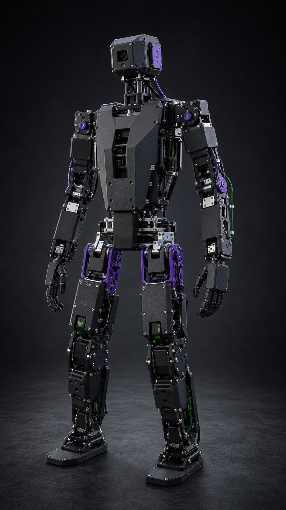
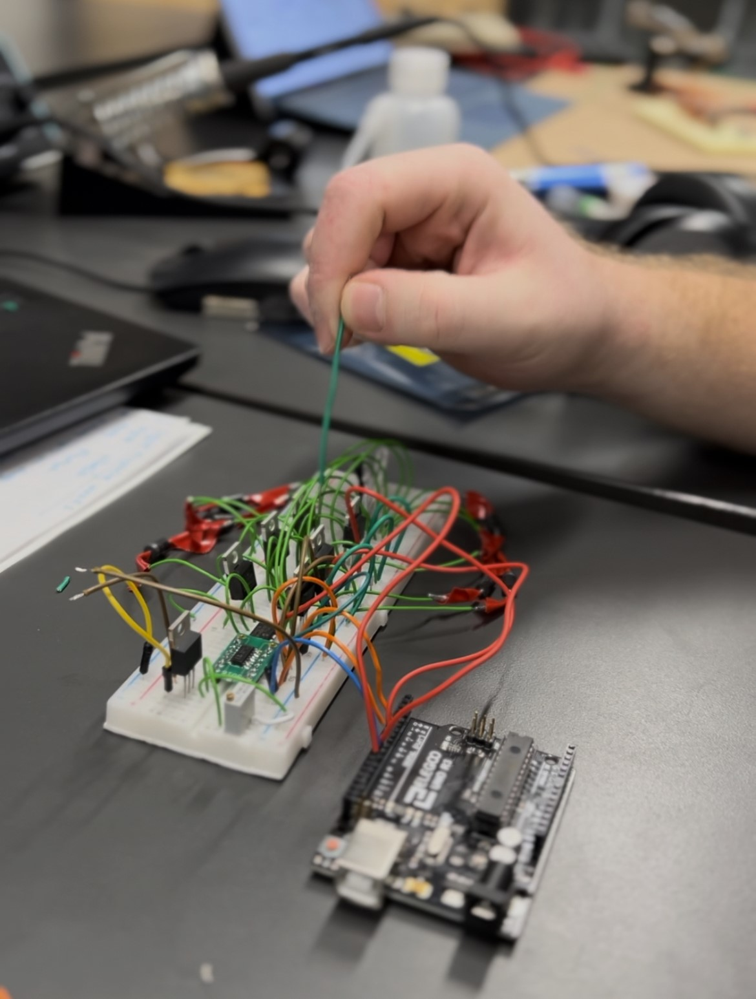
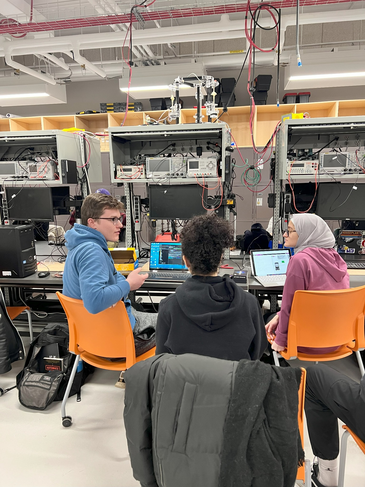
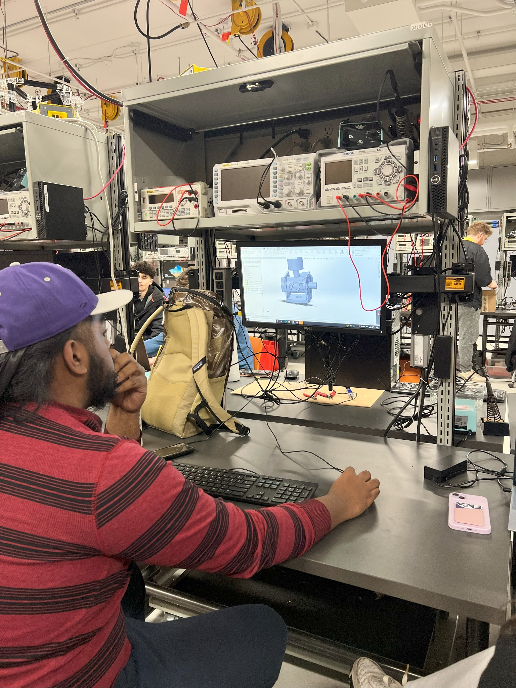

Project JOSH begins
WE Bots' previous humanoid robot project is officially retired and relaunched as Project JOSH, with a more cohesive design and strategy.
 Western Engineering Robotics Design Team
Western Engineering Robotics Design Team
Welcome to WE Bots: the Western Engineering Robotics Design Team. We are building Project JOSH, a student-developed humanoid robotics platform for hands-on learning, testing, and future competition.

Concept render draft - not final hardware
Project JOSH
Meet JOSH, WE Bots' humanoid robot platform. The goal is to build a humanoid robot that can move through its environment autonomously, balance reliably, and handle general movement tasks.
As the platform develops, we aim for JOSH to compete in FIRA's Humanoid Robot Competition: The HuroCup, where robots take place in various sporting events such as basketball, marathon, archery and more.
Concept render only - not finished hardware or final CAD.
About WE Bots
WE Bots gives students an accessible place to learn robotics by contributing to a real engineering project. Members can help with design, manufacturing, electronics, power systems, controls, software, testing, documentation, media, outreach, and sponsorship.
Our focus is not just finishing one robot. We are building the structure, technical knowledge, and documentation needed for future members to keep improving JOSH year after year.



Roadmap
The goal is to move Project JOSH from a student development platform into a robot prepared for future FIRA HuroCup-style competition. Dates are planning targets and may shift as testing progresses.
WE Bots' previous humanoid robot project is officially retired and relaunched as Project JOSH, with a more cohesive design and strategy.
Reinforcement learning, preliminary simulation, early CAD design, CAN communication setup, and motor selection.
Deep learning, advancing the simulation, better integration between teams, battery management system work, and 3D printing testing.
Assembly, full integration, full simulation and vision system testing, and preparation for competition.
Complete the design and prepare for FIRA HuroCup competition and more.
Track earlier WE Bots work, project eras, competition records, and the path that led to JOSH.
TeamSee the current team, faculty leadership, and past rosters as they are collected and recognized.
Sponsor UsSponsors help fund parts, manufacturing, electronics, travel, outreach, and the long-term development of JOSH.
Join WE Bots
Join the Discord to access the membership form and communicate with the team. No previous robotics experience is required.
Summer meetings: Thursdays at 7:00 PM in ACEB 3435